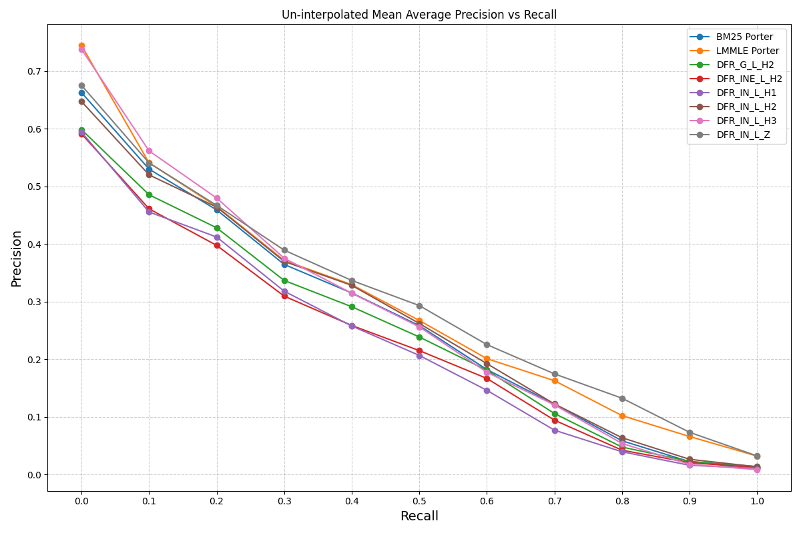
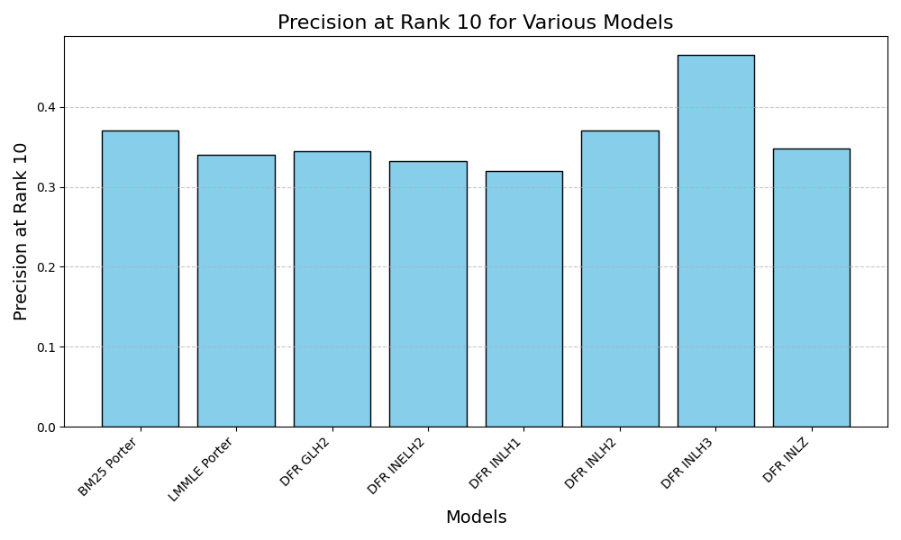
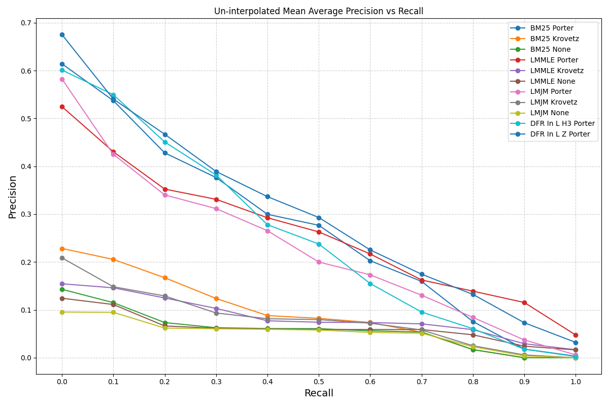
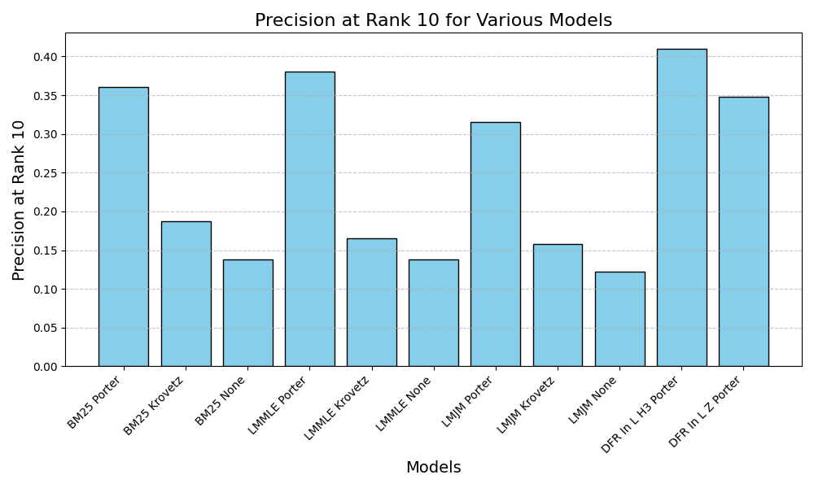
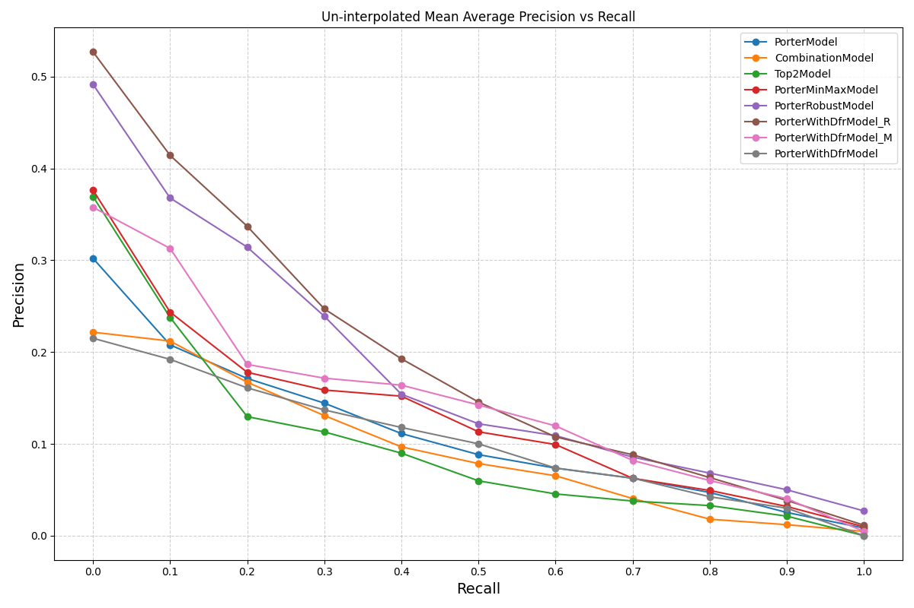
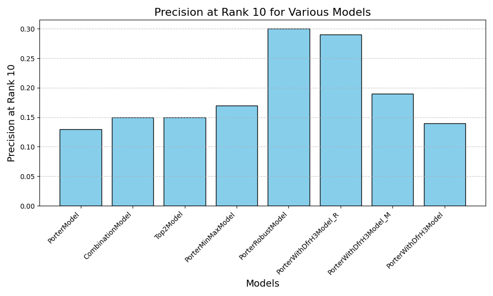

Part 1
Generate three kinds of index via command line (no stemming, portor stemmer, krovet stemmer)
Use autoclass to spawn instance classes from Apache/Lucene’s similarity package and create new classes based on LuceneSearcher so that custom searcher can use specified similarity. For instance:
class LMJelinekMercerSearcher(LuceneSearcher):
pass
Parse the queries and return top 1000 documents for each query in a single file.
(Addition) Total 9 + 6 runs.
Part 2
Both
OKAPI BM25 (BM25)
BM25 Similarity is calculated as \(\frac{freq}{freq+k_1 \cdot (1-b+\frac{b \cdot dl}{avgdl})}\) and with {\(k_1\) = 2, \(b\) = 0.75} will set BM25 to \(\frac{tf}{tf+0.5+1.5*dl/avgdl}\)
Language modeling, maximum likelihood estimates with Laplace smoothing and estimated probability from corpus, query likelihood. (LMMLE)
This uses LMDirichletSimilarity in Apache Lucene, as it aligns closely with the function provided.
Formula:
\[\rho_i = \frac{m_i+1}{n+t/k} + \frac{(t-k)/k \cdot P(w|C)}{n+t/k}\]
Implementation in LMDirichletSimilarity (according to the score function in LMDirichletSimilarity.java from Apache Lucene):
\[log(1+\frac{freq}{\mu \cdot P(w|C)}) + log{\frac{\mu}{dl+\mu}}\]
Language modeling, Jelinek-Mercer smoothing using the corpus, 0.8 of the weight attached to the background probability, query likelihood. (LMJM)
This uses LMJelinekMercerSimilarity in Apache Lucene, corresponding to the function provided.
Formula:
\[\rho_i = \lambda P(w|D) + (1-\lambda)P(w|C)\]
Implementation in LMJelinekMercerSimilarity (according to the score function in LMJelinekMercerSimilarity from Apache Lucene):
\[log(1 + \frac{(1-\lambda)P(w|D)}{\lambda P(w|C)})\]
(Addition) DFRSimilarity (dfr-basemodel-aftereffect-normalization)
DFRSimilarity is a flexible framework for scoring documents based on the Divergence from Randomness model. It uses three main components:
Basic Model: Determines how a term’s distribution diverges from randomness.
After Effect: Adjusts scores based on redundancy in term occurrence.
Normalization: Accounts for document length or other properties.
List of tried features:
| BasicModel | AffterEffect | Normalization | Display |
|---|---|---|---|
| G (Geometric Bose-Einstein model) | L (Laplace smoothing) | H2 | DFR-G-L-H2 |
| Ine (Tf-idf model of randomness, based on a mixture of Poisson and inverse document frequency) | L | H2 | DFR-Ine-L-H2 |
| In (Basic tf-idf model of randomness) | L | H1 | DFR-In-L-H1 |
| In | L | H2 | DFR-In-L-H2 |
| In | L | H3 | DFR-In-L-H3 |
| In | L | Z | DFR-In-L-Z |
According to python -m pyserini.index.lucene -options, we can generate indexes with different stemmer via setting the --stemmer option to one of {none, krovet, porter}
Uninterpolated MAP
Precision at 10

Uninterpolated MAP

Precision at 10 (With DFR Similarity)

Original MAP
Smoothing Comparison
Because LMDirichletSimilarity is using Dirichlet Prior Smoothing, so I’m comparing Dirichlet Prior Smoothing and Jelinek-Mercer Smoothing here.
Dirichlet Prior Smoothing
Formula:
\[P(w|D) = \frac{df + \mu P(w|C}{dl + \mu}\]
Jelinek-Mercer Smoothing
Formula:
\[P(w|D) = \lambda P(w|D) + (1-\lambda)P(w|C)\]
Comparison: Dirichlet smoothing adjusts the weight of the corpus probability based on the length of the document. For short documents, the corpus probability plays a larger role, whereas for longer documents, the term frequency in the document becomes more dominant. This makes Dirichlet smoothing more adaptive to datasets where document lengths vary significantly.
Additional Analysis of DFR Models
After analysis of the original MAP graphs, I found that Porter stemmer with BM25, LMMLE model work really well. This led me to a question whether DFRSimilarity could match or even surpass these models in performance.
After trying out different models’ performance, I delve into BaseModelIn and see what make this outcome. The solution is that our dataset’s query are short, which means they contain fewer terms, placing greater emphasis on the informativeness of individual terms. BaseModelIn performs well in this scenario because its inverse document frequency weighting effectively prioritizes terms that are rare in the collection, aligning with the characteristics of short queries where each term’s discriminative power is critical.
| Aspect | BaseModelIn | BM25 | LMMLE |
|---|---|---|---|
| Foundation | DF-weighted information | Term frequency & doc length | Query likelihood |
| Strengths | Simple and effective | Strong baseline for IR | Balances document and global info |
| Tuning Parameters | none | \(k_1, b\) | \(\mu\) |
| Conclusion (Best for) | Standard IR task | General-purpose retrieval | Sparse or noisy data |
Moreover, NormalizationH3 delivers the best results because it incorporates collection-level statistics into the normalization process. By scaling term frequency using the ratio of total term frequency in the collection (\(\sum{tf}\)) to document frequency (\(df\)), NormalizationH3 adjusts for terms that are common across documents but still valuable for distinguishing relevance.
Similarly, NormalizationZ also performs well because it directly scales term frequency proportionally by the document’s length relative to the average document length. This simplicity is particularly beneficial in datasets with short queries, as it avoids over-complicating the normalization process and ensures that document length differences are accounted for without overly penalizing longer documents.
| Normalization | Formula (\(tfn\) = Normalized \(tf\)) |
|---|---|
| H1 | \(tfn = \frac{tf}{tf + c \cdot dl / avgdl}\) |
| H2 | \(tfn = tf \cdot log(1 + c \cdot \frac{avgdl}{dl})\) |
| H3 | \(tfn = tf \cdot log(1 + \frac{\sum{tf}}{df})\) |
| Z | \(tfn = tf \cdot \frac{avgdl}{dl}\) |
Create three kinds of models with columns as follow.
Feature list:
| Model | Features | Description |
|---|---|---|
| PorterModel | [query_id, doc_id, bm25_porter, lmmle_porter, lmjm_porter] | Select all features generated with Porter Stemmer because Porter Stemmer has the best performance over all the others |
| CombinationModel | [query_id, doc_id, bm25_porter, bm25_krovetz, bm25_none, lmmle_porter, lmmle_krovetz, lmmle_none, lmjm_porter, lmjm_krovetz, lmjm_none] | Select all features generated |
| Top2Model | [query_id, doc_id, bm25_porter, lmmle_porter] | Select the top 2 ranking functions + stemmer as features to see if it improves the precision |
| PorterMinMaxModel | [query_id, doc_id, bm25_porter_minmax, lmmle_porter_minmax, lmjm_porter_minmax] | According to above three models, PorterModel have the best performance. So I use MinMax normalization to scale features for further improvement. |
| PorterRobustModel | [query_id, doc_id, bm25_porter_robust, lmmle_porter_robust, lmjm_porter_robust] | Since I observed that PorterMinMaxModel performs very well, I use a robust scaler to handle outliers and test if it improves the performance further. |
| PorterWithDFRH3Model_R | [query_id, doc_id, bm25_porter_robust, lmmle_porter_robust, lmjm_porter_robust, dfr_in_l_h3_porter_robust] | After evaluating various models, PorterWithDFRH3Model_R sets a new benchmark, breaking the previous performance records. |
| PorterWithDFRH3Model_M | [query_id, doc_id, bm25_porter_minmax, lmmle_porter_minmax, lmjm_porter_minmax, dfr_in_l_h3_porter_minmax] | Run this model to compare with PorterWithDFRH3Model_R |
| PorterWithDFRH3Model | [query_id, doc_id, bm25_porter, lmmle_porter, lmjm_porter, dfr_in_l_h3_porter] | Run this model to compare with PorterWithDFRH3Model_R |
Uninterpolated MAP

Precision at 10

Uninterpolated MAP

Precision at 10

It’s obviously that which feature perform better on pure ranking function will be a better feature in model.
While after doing some feature preprocessing, I found Robust Scaler outperforms MinMax normalization, so I decided to look into it.
| MinMax | Robust | |
|---|---|---|
| Formula | \(x_{scaled} = (x - x_{min}) / (x_{max} - x_{min})\) | \(x_{scaled} = (x - \text{median}) / \text{IQR}\) |
| Outlier | Outlier sensitive | \(\text{IQR} = Q3 - Q1\) (minimize the impact of outliers) |
Conclusion on Robust v.s. MinMax
Numbers in the graphs: